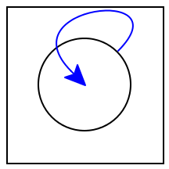

9 Recursion and Cycles: Procedures and Data
Recursion is the act of self-reference. When we speak of
recursion in programming languages, we may have one of (at least) two
meanings in mind: recursion in data, and recursion in control (i.e.,
of program behavior—
9.1 Recursive and Cyclic Data
Recursion in data can refer to one of two things. It can mean referring to something of the same kind, or referring to the same thing itself.
Recursion of the same kind leads to what we traditionally call recursive data. For instance, a tree is a recursive data structure: each vertex can have multiple children, each of which is itself a tree. But if we write a procedure to traverse the nodes of a tree, we expect it to terminate without having to keep track of which nodes it has already visited. They are finite data structures.
In contrast, a graph is often a cyclic datum: a node refers to another node, which may refer back to the original one. (Or, for that matter, a node may refer directly to itself.) When we traverse a graph, absent any explicit checks for what we have already visited, we should expect a computation to diverge, i.e., not terminate. Instead, graph algorithms need a memory of what they have visited to avoid repeating traversals.
The ability to create compound structures (such as nodes that have references to children).
The ability to bottom-out the recursion (such as leaves).
Add lists and binary trees as built-in datatypes to the programming language.
Adding cyclic data is more subtle. Consider the simplest form of cyclic datum, a cell referring back to itself:

(let ([b b]) b)
((lambda (b) b) b)
((lambda (x) x) b)
Absent some magical Racket construct we haven’t yet
seenThat construct would be shared, but virtually
no other language has this notational mechanism, so we won’t dwell on
it here. In fact, what we are studying is the main idea behind how
shared actually works., it becomes clear that we can’t create
a cyclic datum in one shot. Instead, we need to first create a
“place” for the datum, then refer to that place within itself. The
use of “then”—
(let ([b (box 'dummy)]) (begin (set-box! b b) b))
When the above program is Run, Racket prints this as: #0=’#�#. This notation is in fact precisely what we want. Recall that #& is how Racket prints boxes. The #0= (and similarly for other numbers) is how Racket names pieces of cyclic data. Thus, Racket is saying, “#0 is bound to a box whose content is #0#, i.e., whatever is bound to #0, i.e., itself”.
Run the equivalent program through your interpreter for boxes and make sure it produces a cyclic value. How do you check this?
The idea above generalizes to other datatypes. In this same way we can also produce cyclic lists, graphs, and so on. The central idea is this two-step process: first name an vacant placeholder; then mutate the placeholder so its content is itself; to obtain “itself”, use the name previously bound. Of course, we need not be limited to “self-cycles”: we can also have mutually-cyclic data (where no one element is cyclic but their combination is).
9.2 Recursive Functions
In a shift in terminology, a recursive function is not a reference to a same kind of function but rather to the same function itself. It’s useful to first ensure we’ve first extended our language with conditionals (even of the kind that only check for 0, as described earlier: Adding Functions to the Language), so we can write non-trivial programs that terminate.
(let ([fact (lambda (n) (if0 n 1 (* n (fact (- n 1)))))]) (fact 10))
It is no surprise that we should encounter the same error, because it
has the same cause. Our traditional binding mechanism does not
automatically make function definitions cyclic (indeed, in some early
programming languages, they were not: misguidedly, recursion was
considered a special feature).Because you
typically write top-level definitions, you don’t encounter this
issue. At the top-level, every binding is implicitly a variable or a
box. As a result, the pattern below is more-or-less automatically put
in place for you. This is why, when you want a recursive local
binding, you must use letrec or local, not let.
Instead, if we want
recursion—
(let ([fact (box 'dummy)]) (let ([fact-fun (lambda (n) (if (zero? n) 1 (* n ((unbox fact) (- n 1)))))]) (begin (set-box! fact fact-fun) ((unbox fact) 10))))
(let ([fact (box 'dummy)]) (begin (set-box! fact (lambda (n) (if (zero? n) 1 (* n ((unbox fact) (- n 1)))))) ((unbox fact) 10)))
(let ([fact 'dummy]) (begin (set! fact (lambda (n) (if (zero? n) 1 (* n (fact (- n 1)))))) (fact 10)))
9.3 Premature Observation
(rec name value body)
(rec fact (lambda (n) (if (= n 0) 1 (* n (fact (- n 1))))) (fact 10))
(let ([name (box 'dummy)]) (begin (set-box! name value) body))
(let ([name 'dummy]) (begin (set! name value) body))
This naturally inspires a question: what if we get these out of order? Most interestingly, what if we try to use name before we’re done updating its true value into place? Then we observe the state of the system right after creation, i.e., we can see the placeholder in its raw form.
(letrec ([x x]) x)
(local ([define x x]) x)
Make sure the value is sufficiently obscure so that it can never be used in a meaningful context. This means values like 0 are especially bad, and indeed most common datatypes should be shunned. Instead, the language might create a new type of value just for use here. Passed to any other operation, this will result in an error.
Explicitly check every use of an identifier for belonging to this special “premature” value. While this is technically feasible, it imposes an enormous performance penalty on a program. Thus, it is usually only employed in teaching languages.
Allow the recursion constructor to be used only in the case of binding functions, and then make sure that the right-hand side of the binding is syntactically a function. Unfortunately, this solution can be a bit drastic because it precludes writing, for instance, structures to create graphs.
9.4 Without Explicit State
As you may be aware, there is another way to define recursive functions (and hence recursive data) that does not leverage explicit mutation operations.
You’ve already seen what goes wrong when we try to use just let to define a recursive function. Try harder. Hint: Substitute more. And then some more. And more!
Obtaining recursion from just functions is an amazing idea, and I use the term literally. It’s written up well by Daniel P. Friedman and Matthias Felleisen in their book, The Little Schemer. Read about it in their sample chapter online.
Does the above solution use state anywhere? Implicitly?